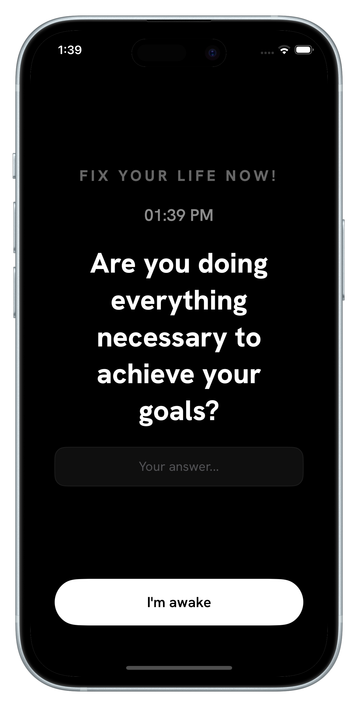
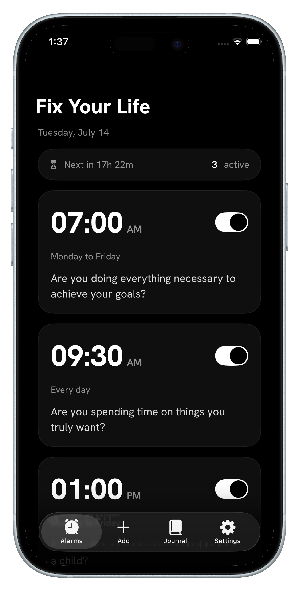
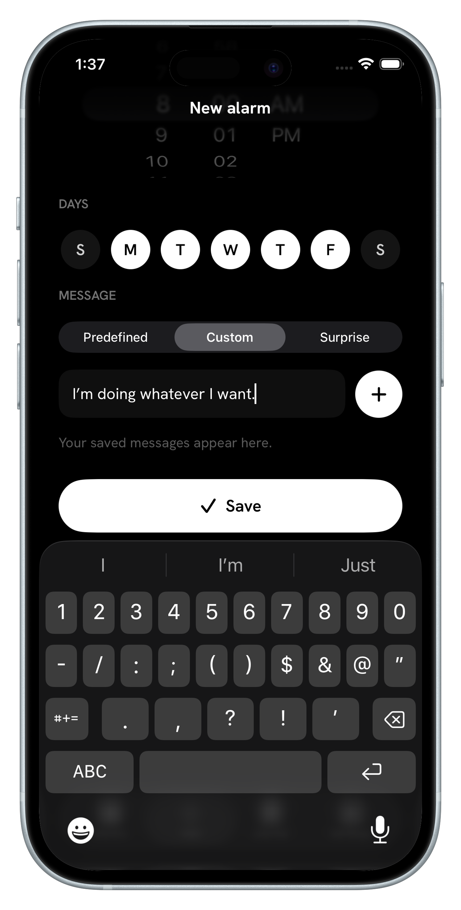
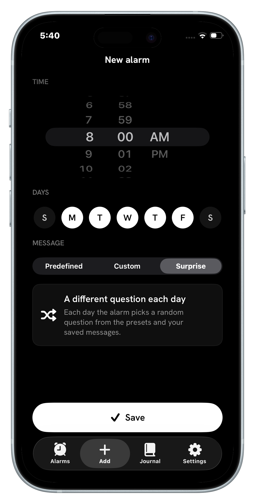
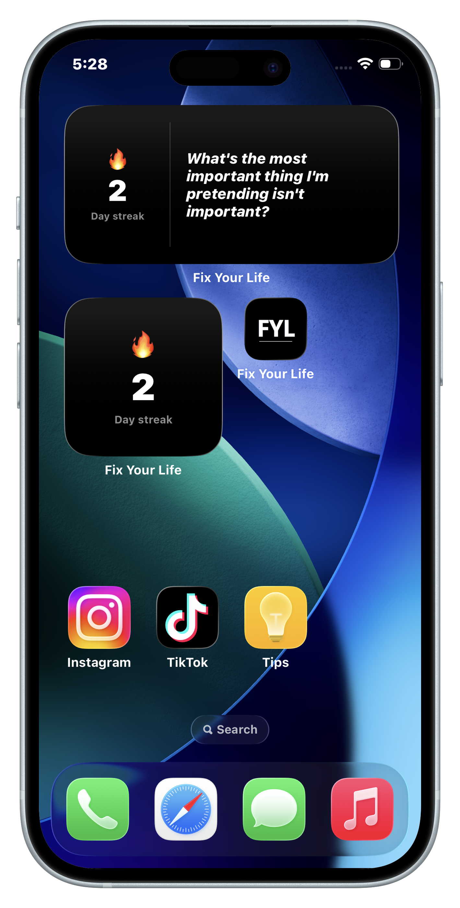
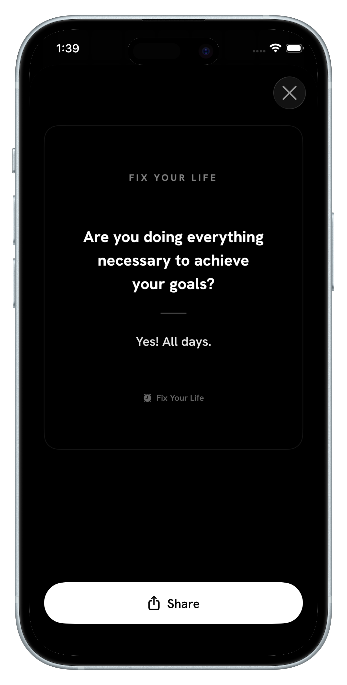

The alarm that asks you questions, not one you snooze.
Fix Your Life interrupts your day with confronting questions that pull you back into the present. Answer in one line. Keep the streak. Stop living on autopilot.
Free to download · 3-day free trial · No ads. Ever.

Your alarm just became a practice.
Confronting questions, one-line answers, a streak you won't want to break — and widgets that keep it in sight.
iPhone · Available in 6 languages · Premium from a 3-day free trial
Inside the app
Confronting questions, not snooze buttons.
Every screen is built for one thing: waking you up to your own life — in a clean, distraction-free black & white design.

Alarms with meaning
Set alarms that ring until you face them.
Schedule confronting questions for any time and any days — a 7:00 AM goals check, a 1:00 PM focus reset. No snoozing past your intentions: the alarm keeps ringing until you show up.
Why ignorable reminders fail →
Answer it. Keep the streak
One honest line a day becomes a journal — and a streak.
Each answer is saved with its question and date. The heatmap shows every day you showed up, and the streak makes consistency something you can feel — and protect.
How to build a journaling streak →
Make it personal
Write & save your own messages.
The question that changes your day is usually the one you write yourself. Save unlimited custom messages and reuse them across alarms — your words, your confrontation.
What to write when you don't know what to write →
Surprise mode
A different question every day.
Repetition becomes background noise. Surprise mode pulls a fresh question each day — from the presets and your own saved messages — so the alarm never loses its edge.
Daily check-in questions that work →
Widgets
Right on your home screen.
Streak and question-of-the-day widgets keep the practice in sight. It confronts you before you even open the app — every time you unlock your phone.
Set up the streak widget →
Share the wins
Share what you're proud of.
Turn any reflection into a clean black & white image and share it anywhere. Your answers are proof you showed up — some of them deserve daylight.
The one-line-a-day method →How it works
Four steps. One honest answer at a time.
Build awareness. Interrupt autopilot. Live in the present.
Set an alarm
Pick any time and any days — morning intention, midday reset, evening review.
Pick your question
Choose a built-in confronting question, write your own, or let Surprise mode choose daily.
Face it & answer
When it rings, there's no snooze escape — answer the question with one honest line.
Watch your streak grow
Your answers become a journal, your consistency becomes a heatmap you won't want to break.
Guides
Learn the practice behind the app.
Short, practical guides on mindfulness, journaling, streaks and self-reflection — and how to run each one with Fix Your Life.
How to Stop Living on Autopilot
Research says almost half your day runs on autopilot. Here's a practical system of interruptions that brings you back.
Read the guide ProductivityDaily Check-In Questions That Keep You on Track
The exact questions to ask yourself every day — and when to ask them — so your goals survive contact with your calendar.
Read the guide JournalOne Line a Day: Journaling for People Who Quit Journals
Why the smallest journaling method is the one that sticks, and how to make it automatic.
Read the guide StreakHow to Build a Journaling Streak You Won't Break
Streaks work because losing them hurts. How to start one, protect it, and use the heatmap to stay honest.
Read the guide StoicismDaily Stoic Questions: A Morning & Evening Practice
The questions Marcus Aurelius asked himself — turned into a modern alarm-based routine.
Read the guide MotivationMotivational Alarm Clock: Wake Up With a Reason
Your first thought of the day is up for grabs. Claim it with a question instead of a ringtone.
Read the guideFAQ
Questions, answered. Fitting.
What is Fix Your Life?
How is Fix Your Life different from a normal alarm clock app?
What kind of questions does the alarm ask?
Can I write my own alarm messages?
How does the streak and heatmap work?
Does Fix Your Life have iPhone home screen widgets?
Is Fix Your Life a journaling app?
Can Fix Your Life help me stop living on autopilot?
How much does Fix Your Life cost?
What languages is Fix Your Life available in?
Does Fix Your Life show ads or sell my data?
“If someone filmed the last two hours of your life — would they conclude you want what you say you want?”
Most of us drift through the day on autopilot. A well-timed question can wake you up far more than any ringtone.
Download on theApp StoreFree to download · 3-day free trial · No ads. Ever.